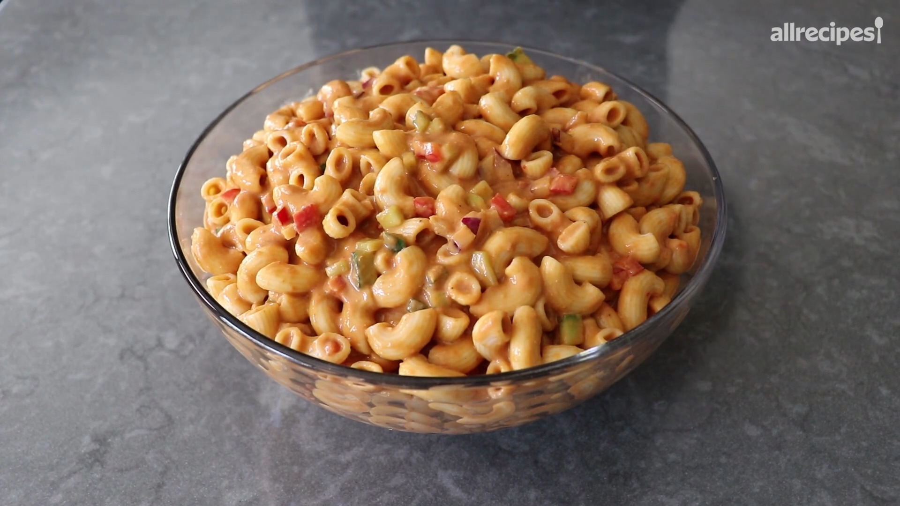

Gazpacho Pasta Salad

Description
This gazpacho pasta salad is based on everybody's favorite cold summer soup, gazpacho. It's wonderfully fresh,
vibrant,
and deliciously different.
Ingredients
Gazpacho Dressing
- 1 large English cucumber, divided
- 1 cup roughly chopped red bell pepper
- 1 jalapeno pepper, seeded and chopped
- 2 tablespoons sliced green onions, white and light green parts only
- 2 cloves garlic, peeled
- 2 1/2 pounds fresh, ripe tomatoes, cored and quartered
- 5 basil leaves, or more to taste
- 2 teaspoons kosher salt
- 1/2 teaspoon freshly ground black pepper
- 1 teaspoon white sugar
- 1/2 cup wine vinegar
- 1/2 cup olive oil
Salad
- 1 pound large elbow macaroni
- 1/4 cup diced red bell pepper
- 2 tablespoons diced red onion
- salt and freshly ground black pepper to taste
Steps
- Peel just over half the cucumber, and set aside. Finely dice remaining unpeeled cucumber and reserve in the
refrigerator.
- For gazpacho dressing, cut peeled cucumber into large chunks and add to the jar of a large blender; add in
red bell
pepper, jalapeno, green onion, garlic, tomatoes, basil, salt, black pepper, sugar, wine vinegar, and olive
oil. Blend
until smooth; strain into a large bowl. You should have 7 to 8 cups dressing.
- For salad, bring a large pot of salted water to a boil and cook macaroni until not quite tender with a bite,
about 6
minutes, or about 15 to 30 seconds less than package directions. Drain very well and let cool slightly,
stirring
occasionally, about 5 minutes.
- Stir macaroni into gazpacho dressing until very well coated. Wrap and refrigerate for at least 5 hours or up
to
overnight.
- The next day, stir salad again, and then stir in reserved diced cucumber, red bell pepper, and red onion.
Season with
salt and freshly ground black pepper and serve.